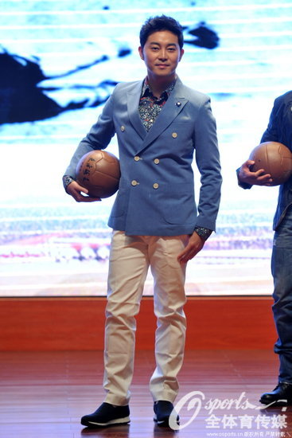
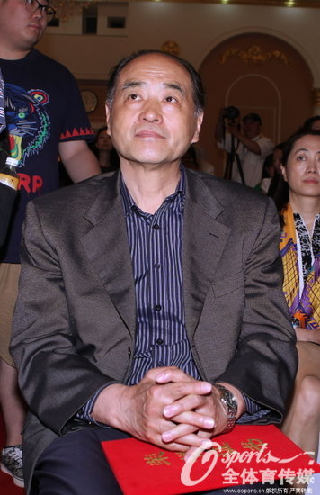

详情
《东方球王》开机沙溢演球王 中国足坛元老助阵
2015年5月11日14:44
来源：未知

5月6日，以一代球王李惠堂为故事原型的大型年代传奇励志电视剧《东方球王》，在北京举办了盛大的开机发布会。
该剧讲述了自小患有软骨症的李耀华（沙溢饰）经过超出常人的刻苦练习、练就精湛球艺，与一帮队友在乱世中经历种种威逼利诱，仍然坚守民族大义和足球精神，向世界展示了中国足球的实力，并最终成长为一代球王的故事。
作为近年电视荧屏上少有的剧目类型，《东方球王》以“足球运动”为故事线索，以一场场“足球赛事”推动全剧故事脉络与矛盾冲突，如何将比赛场面拍得精彩，无疑成为了摆在剧组面前的一大难题。

为此，制片方特别为该剧请来了年维泗、刘利福、郭瑞龙、马元安、陈成达、陈家亮等诸多国家队元老级人物，担当该剧的足球顾问。